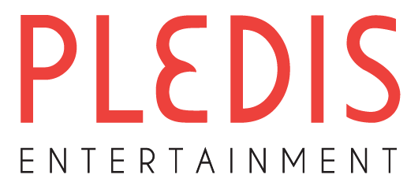

플레디스엔터테인먼트 Pledis Entertainment
플레디스엔터테인먼트(Pledis Entertainment)는 세븐틴을 배출한 하이브 산하 연예기획사이다.
최종 업데이트

플레디스엔터테인먼트는 어떤 브랜드인가
플레디스엔터테인먼트(Pledis Entertainment)는 2007년 한성수가 설립했으며 사명은 별무리 '플레이아데스'에서 유래했다. 2020년 하이브가 최대주주가 되어 자회사로 편입됐고 세븐틴·TWS 등을 운영한다.
플레디스엔터테인먼트는 어떻게 봐야 할까
제품·서비스 범위, 유통 방식, 시각 아이덴티티, 시장 포지션을 함께 비교하면 같은 산업의 다른 브랜드와 차이가 선명해집니다.
플레디스엔터테인먼트는 어떻게 시작되고 성장했나
한성수가 2007년 설립한 한국 연예기획사로, 2020년 하이브 자회사가 됐다.
플레디스엔터테인먼트의 브랜드 아이덴티티는 무엇인가
세븐틴을 중심으로 한 하이브 멀티레이블 산하 K-pop 기획사다.
플레디스엔터테인먼트의 대표 제품과 서비스는 무엇인가
플레디스엔터테인먼트의 제품과 서비스는 미디어·엔터테인먼트 범주에서 해석됩니다.
플레디스엔터테인먼트는 지금 어떤 상태인가
플레디스엔터테인먼트 연혁 — 주요 사건은 언제였나
플레디스엔터테인먼트 로고는 어떻게 변해왔나
대표 로고대표 브랜드 마크
대표 로고 1보관 이미지 1자주 묻는 질문
플레디스엔터테인먼트는 어느 나라 브랜드인가요?
플레디스엔터테인먼트는 한국의 미디어·엔터테인먼트 브랜드입니다.
플레디스엔터테인먼트는 언제 설립되었나요?
플레디스엔터테인먼트는 2007년 설립되었습니다.
플레디스엔터테인먼트의 브랜드 아이덴티티는 무엇인가요?
세븐틴을 중심으로 한 하이브 멀티레이블 산하 K-pop 기획사다.
플레디스엔터테인먼트의 대표 제품은 무엇인가요?
플레디스엔터테인먼트의 제품과 서비스는 미디어·엔터테인먼트 범주에서 해석됩니다.
플레디스엔터테인먼트는 현재 어떤 상태인가요?
국가: 대한민국; 산업: 엔터테인먼트; 음악
플레디스엔터테인먼트의 본사는 어디에 있나요?
플레디스엔터테인먼트의 본사는 서울특별시에 있습니다(위키데이터 기준).
플레디스엔터테인먼트의 모기업은 어디인가요?
플레디스엔터테인먼트의 모기업은 하이브입니다(위키데이터 기준).
출처와 검증
플레디스엔터테인먼트 관련 참고: 공식 웹사이트 · 위키데이터 Q45282 · 한국어 위키백과 · 영어 위키백과. 브랜드명은 한글과 원어를 함께 표기하되 데이터에 없는 표기는 만들지 않습니다. 기원 국가·설립연도는 검수된 정의문에서 확인된 값을 우선하고, 없을 때만 공식 웹사이트 URL이 일치하는 위키데이터 개체의 값을 씁니다. 위키데이터 값은 2026-09-07 기준입니다.